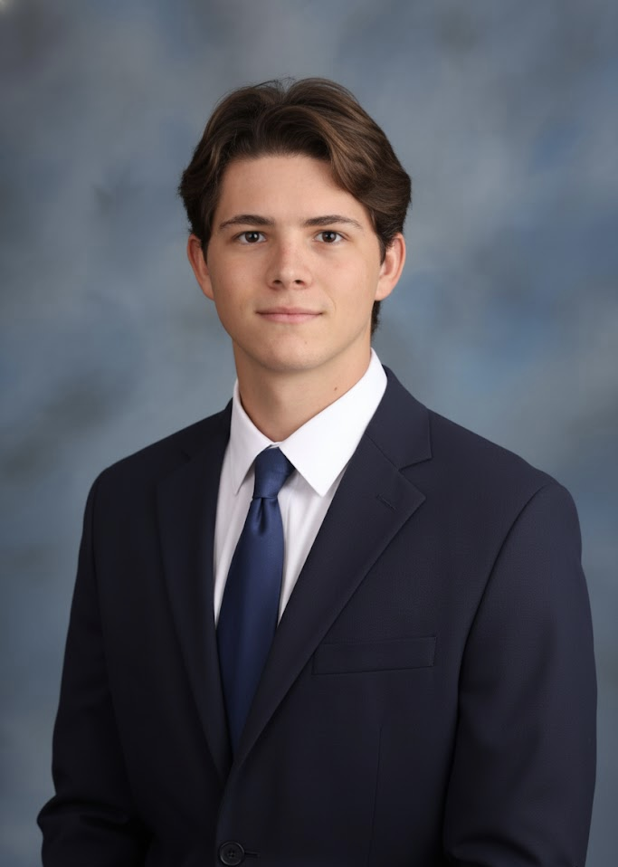

Keegan Usry
University of Central Florida • Burnett Honors College • B.S. Mechanical Engineering • Graduation: July 2027
I am a mechanical engineering student in the Burnett Honors College at the University of Central Florida whose academic and professional work has increasingly drawn me toward the study of law. My engineering background has trained me to work within demanding systems of rules, standards, and consequences: I research regulatory frameworks governing safety standards in medical-device and environmental systems, interpret federal and international requirements in professional settings, and write with precision in contexts where ambiguity can carry operational, ethical, and legal consequences.
What began as an interest in how things work has become an interest in how institutions govern them. Through research, technical design, tutoring, volunteer leadership, and service, I have become especially interested in the intersection of law with technology, health, regulation, environmental policy, and organizational responsibility. I am drawn to legal study because it offers the most rigorous framework for examining how rules are made, interpreted, contested, and applied to real human problems.
My résumé reflects a pattern that I believe is especially relevant to legal education: close reading of standards, disciplined writing, comfort with complexity, service to others, and leadership in environments where judgment matters. At Philips MRI Patient Care, I conduct research into national and international medical-device standards and legislation to support compliance across more than 1,500 product requirements. At Daniels Manufacturing Corporation, I interpreted formal specification requirements for federally regulated aerospace tooling, maintained revision traceability, and executed 45+ Engineering Change Orders. Outside engineering, I have helped raise over $56,000 annually for St. Jude, taught students in underserved schools, advised housing operations for a 100+ member organization, and run an independent construction business from client intake through completion.

Education & Distinction
University of Central Florida — Burnett Honors College
Bachelor of Science in Mechanical Engineering • Graduation: May 2026
My academic work centers on the regulatory frameworks governing safety standards in medical devices and environmental systems, an area that has shaped my interest in legal reasoning, institutional design, and public accountability. In addition to my engineering coursework, I have pursued research and writing that connect technical systems to broader policy and legal questions, including a paper on the legal and environmental effects of pesticide regulation in the United States and Ecuador. [file:51]
- Burnett Honors College student in an academically selective environment emphasizing rigorous inquiry and high-level written communication.
- Dean’s List: Fall 2023, Fall 2025.
- Pegasus Award recipient: 2023, 2024, 2025.
- ASHRAE Engineering Scholarship recipient (August 2025), selected from a large national pool based on exemplary engineering research and detailed writing across a broad scope of topics.
- FEBB Scholarship recipient (August 2025), awarded after regional competition involving in-depth research and two essays explaining difficult engineering ideas in plain language; this also resulted in a speaking invitation at a regional conference.
- NCEES FE Mechanical Exam passed, a broad-based engineering licensure exam with an approximately 50% pass rate according to your résumé.
Why Law
Rules, Standards, and Interpretation
My engineering training has consistently placed me in settings where written standards determine real-world outcomes. Whether interpreting medical-device legislation, federal design specifications, or emergency response protocols, I have learned to read carefully, reason precisely, and act within systems where language matters. That discipline is one of the strongest reasons I am drawn to legal study.
Research with Public Consequences
My research focus on medical-device and environmental safety regulation, together with my paper on pesticide regulation in the United States and Ecuador, has made me increasingly interested in how law shapes public health, environmental risk, and institutional responsibility. I am especially motivated by questions that sit at the boundary of science, policy, and legal accountability.
Service and Human Stakes
Teaching in underserved schools, fundraising for pediatric cancer care, and serving in safety-critical roles have reminded me that systems exist to serve people. I want legal training not only because I enjoy analytical rigor, but because I believe law is one of the most consequential tools for protecting health, dignity, fairness, and opportunity.
Communication Under Constraint
Across tutoring, technical writing, cross-functional engineering work, and organizational leadership, I have repeatedly had to explain complex ideas in clear language to audiences with different backgrounds and interests. That combination of analytical depth and plain-language communication is central to how I hope to contribute in law school and beyond.